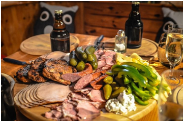

Harmonização de cervejas e pratos do dia-a-dia

Este guia de harmonização com cerveja foi elaborado com o objetivo de trazer sugestões rápidas e diretas de combinações de pratos e cervejas. Foi lançado conjuntamente com o Pratos & Brejas, evento promovido pelo Brejas para difundir a cultura cervejeira através de boas harmonizações. Deve ser visto como seu ponta-pé inicial e não como uma regra. Lembre-se sempre que este assunto não é um ciência exata e que cada novo teste pode nos trazer enormes surpresas recheadas de inúmeras possibilidades. Incentivamos que você tente, invente, surpreenda-se!
Mas harmonizações não são melhores com vinho?
Todos sabemos que os vinhos harmonizam muito bem com os alimentos. No entanto, devemos deixar o conservadorismo de lado e testar novas combinações. A cerveja também proporciona uma excelente combinação com inúmeros ingredientes e receitas culinárias, além de oferecer determinadas características que não estão presentes na maior parte dos vinhos. Como a carbonatação, que limpa e ativa as papilas gustativas e, por conseqüência, acentua os sabores das preparações. Há também o lúpulo, que por seu amargor torna-se um estimulante do apetite, além de reduzir aquela camada de gordura que fica na boca. Não nos esqueçamos dos sabores e aromas torrados e/ou caramelizados de algumas cervejas, que acompanham com perfeição certos pratos.
E cerveja harmoniza bem com o que?
Para se tirar o maior proveito da cerveja harmonizada com o prato, devemos identificar os ingredientes presentes na receita e as características base da cerveja, combinando-os de forma a que nenhum se sobreponha ao outro. As harmonizações são sempre por corte (quando, por exemplo, os elementos da breja, como carbonatação e amargor, "quebram" a gordura presente no prato, limpando o paladar para a nova garfada), contraste (quando as características diferentes entre o prato e a cerveja acabam por valorizar a ambos), e semelhança (quando prato e cerveja possuem elementos sensoriais que se assemelham e agregam sensações aos dois), de modo que as qualidades recíprocas sejam ressaltadas. Por exemplo, para acompanhar um prato de carne com molho intenso, deve-se buscar as bebidas mais encorpadas e complexas; se a preparação for rica em gordura, recomenda-se cervejas bastante lupuladas, carbonatadas e com alto teor alcoólico. Já para acompanhar pratos leves e frutos do mar, o ideal é recorrer às cervejas de trigo ou às tradicionais Pilsner.
Dicas gerais de harmonização
-
leves acompanham comidas leves, enquanto cervejas mais fortes, intensas e encorpadas harmonizam melhor com comidas mais pesadas e gordurosas
-
Pense em Ales como Vinho Tinto e Lagers como Vinho Branco. Como as Ales são fermentadas em temperaturas mais altas, normalmente são de aromas e sabores mais complexos. Lagers, por serem fermentadas em temperaturas mais baixas, são normalmente mais leves, com aromas e sabores mais suaves. Outro comparativo válido é pensar em cervejas de alto amargor como se fossem vinhos bem ácidos ou com bastante tanino.
-
Quanto mais escura a cerveja, mais escura deve ser a comida da harmonização. Cervejas escuras recebem essa cor dos maltes escuros, que normalmente têm um sabor mais tostado e algumas vezes mais adocicado, que combina bem com os mesmos sabores das comidas bem assadas ou grelhadas.
Quanto mais picante for a comida, mais lupulada e amarga deve ser a cerveja. O lúpulo consegue cortar bem o efeito das pimentas, permitindo que você consiga sentir melhor os sabores tanto do prato quanto da cerveja.
-
Deixe que a região seja seu guia. Cervejas e comidas originárias da mesma região quase sempre funcionam bem juntas.
-
É importante ter atenção especial à sequência em que são servidas as cervejas. Se você planeja servir cervejas de diferentes estilos, prefira começar com as mais leves, tanto em sabores quanto em álcool, evoluindo para cervejas mais complexas e encorpadas no final. O mesmo vale para cervejas secas e doces. Comece pelas secas. O objetivo é que os sabores mais intensos não atrapalhem ou sobreponham os sabores mais leves. Também evita que as pessoas sintam-se pesadas ou sonolentas logo no início da harmonização.